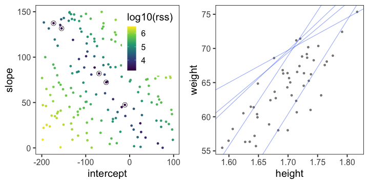
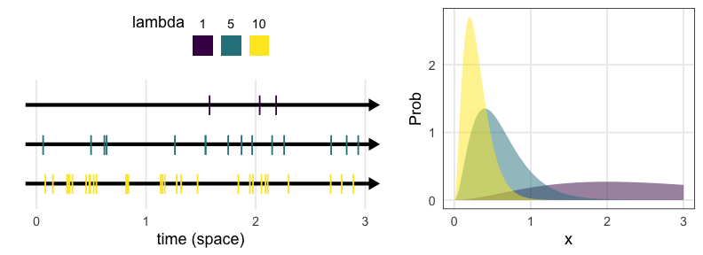

統計モデリング概論 DSHC 2021
(Graduate School of Life Sciences, Tohoku University)
直線あてはめ: 統計モデルの出発点
- 身長が高いほど体重も重い。いい感じ。
何でもかんでも直線あてはめではよろしくない
- 観察データは常に正の値なのに予測が負に突入してない？
- 縦軸のばらつきが横軸に応じて変化？
何でもかんでも直線あてはめではよろしくない
- 観察データは常に正の値なのに予測が負に突入してない？
- 縦軸のばらつきが横軸に応じて変化？
- データに合わせた統計モデルを使うとマシ
ちょっとずつ線形モデルを発展させていく
線形モデル LM (単純な直線あてはめ)
↓ いろんな確率分布を扱いたい
一般化線形モデル GLM
↓ 個体差などの変量効果を扱いたい
一般化線形混合モデル GLMM
↓ もっと自由なモデリングを！
階層ベイズモデル HBM
データ解析のための統計モデリング入門 久保拓弥 2012 より改変
回帰モデルの2段階
-
Define a family of models: だいたいどんな形か、式をたてる
- 直線: $y = a_1 + a_2 x$
- 対数: $\log y = a_1 + a_2 x$
- 二次曲線: $y = a_1 + a_2 x^2$
-
Generate a fitted model: データに合うようにパラメータを調整
- $y = 3x + 7$,
- $y = 9x^2$
たぶん身長が高いほど体重も重い
なんとなく $y = a x + b$ でいい線が引けそう

たぶん身長が高いほど体重も重い
なんとなく $y = a x + b$ でいい線が引けそう
じゃあ切片と傾き、どう決める？
最小二乗法
回帰直線からの残差平方和(RSS)を最小化する。

残差平方和(RSS)が最小となるパラメータを探せ
ランダムに試してみて、上位のものを採用

残差平方和(RSS)が最小となるパラメータを探せ
グリッドサーチ: パラメータ空間の一定範囲内を均等に試す
こうした最適化の手法はいろいろあるけど、ここでは扱わない。
これくらいなら一瞬で計算してもらえる
par_init = c(intercept = 0, slope = 0)
result = optim(par_init, fn = rss_weight, data = df_weight)
result$par
intercept slope
-66.63000 77.04308
さて、もう少し複雑なあてはめをするために
統計モデルの重要な部品「確率分布」を扱う。
確率分布
発生する事象(値)と頻度の関係。
手元のデータを数えて作るのが経験分布
e.g., サイコロを12回投げた結果、学生1000人の身長

一方、少数のパラメータと数式で作るのが理論分布。
(こちらを単に「確率分布」と呼ぶことが多い印象）
確率変数$X$はパラメータ$\theta$の確率分布$f$に従う…?
$X \sim f(\theta)$
e.g.,
コインを3枚投げたうち表の出る枚数 $X$ は二項分布に従う。
$X \sim \text{Binomial}(n = 3, p = 0.5)$

一緒に実験してみよう。
試行を繰り返して記録してみる
コインを3枚投げたうち表の出た枚数 $X$
試行1: 表 裏 表 → $X = 2$
試行2: 裏 裏 裏 → $X = 0$
試行3: 表 裏 裏 → $X = 1, 2, 1, 3, 0, 2, \ldots$

コイントスしなくても $X$ らしきものを生成できる
- コインを3枚投げたうち表の出る枚数 $X$
- $n = 3, p = 0.5$ の二項分布からサンプルする乱数 $X$
↓ サンプル
{2, 0, 1, 2, 1, 3, 0, 2, …}
これらはとてもよく似ているので
「コインをn枚投げたうち表の出る枚数は二項分布に従う」
みたいな言い方をする。逆に言うと
「二項分布とはn回試行のうちの成功回数を確率変数とする分布」
のように理解できる。
統計モデリングの一環とも捉えられる
コイン3枚投げを繰り返して得たデータ {2, 0, 1, 2, 1, 3, 0, 2, …}
↓ たった2つのパラメータで記述。情報を圧縮。
$n = 3, p = 0.5$ の二項分布で説明・再現できるぞ

こういうふうに現象と対応した確率分布、ほかにもある？
有名な確率分布、それに「従う」もの
- 離散一様分布
- コインの表裏、サイコロの出目1–6
- 二項分布
- 成功率p、試行回数nのうちの成功回数
- ポアソン分布
- 単位時間あたり平均$\lambda$回起こる事象の発生回数
- 幾何分布
- 成功率pの試行が初めて成功するまでの失敗回数
- ガンマ分布
- ポアソン過程でk回起こるまでの待ち時間
- (k = 1のとき指数分布と呼ばれる)
- 正規分布
- 確率変数の和、平均値
離散一様分布
同じ確率で起こるn通りの事象のうちXが起こる確率
e.g., コインの表裏、サイコロの出目1–6

🔰 一様分布になりそうな例を考えてみよう
二項分布
確率pで当たるクジをn回引いてX回当たる確率
\[ \text{Prob}(X = k) = \binom n k p^k (1 - p)^{n - k} \]

🔰 1%の当たりを狙って100連ガチャを回した場合を可視化してみよう
🔰 二項分布になりそうな例を考えてみよう
ポアソン分布
平均$\lambda$で単位時間(空間)あたりに発生する事象の回数
e.g., 1時間あたりのメッセージ受信件数、メッシュ区画内の生物個体数

🔰 ポアソン分布になりそうな例を考えてみよう
二項分布の極限。めったに起きないことを何回も試行。
指数分布
ポアソン過程の事象の発生間隔 (平均$1 / \lambda$)
e.g., メッセージの受信間隔、国道沿いに落ちてる手袋の間隔

🔰 指数分布になりそうな例を考えてみよう
ガンマ分布
ポアソン過程の事象k回発生までの待ち時間
e.g., メッセージを2つ受信するまでの待ち時間

🔰 ガンマ分布になりそうな例を考えてみよう
正規分布
標本平均を何度もサンプルしたもの(中心極限定理)
e.g., 一様分布 $X \in [0, 100)$ から取った標本40個の平均値

これ以外にも、正規分布はいろんなところに現れる
正規分布に近づくもの
大きい$n$の二項分布

大きい$\lambda$のポアソン分布

有名な確率分布対応関係ふりかえり
- 離散一様分布
- コインの表裏、サイコロの出目1–6
- 二項分布
- 成功率p、試行回数nのうちの成功回数
- ポアソン分布
- 単位時間あたり平均$\lambda$回起こる事象の発生回数
- 幾何分布
- 成功率pの試行が初めて成功するまでの失敗回数
- ガンマ分布
- ポアソン過程でk回起こるまでの待ち時間
- (k = 1のとき指数分布と呼ばれる)
- 正規分布
- 確率変数の和、平均値
確率分布に「従わない」ことが多い
現実には、確率分布をあてはめただけではうまく説明できない。
それはなぜ？と考えていくのがまさに統計モデリングの仕事。
e.g., ポアソン分布になるはずなのに、分散が大きすぎるぞ。
e.g., 指数分布になるはずなのに、ひと山型で分散が小さいぞ。
「何も無ければこうなるはず」を理解してこそできる思考。
Pythonで乱数生成・可視化
https://numpy.org/doc/stable/reference/random/generator.html
https://seaborn.pydata.org/tutorial/distributions.html
コイントス、サイコロ、ポアソン。
「分布に従う」を感覚的に理解するまで。
何分布？ パラメータどうする？
ある植物が作った種子を数える。50個体ぶん。

カウントデータだからポアソン分布っぽい。
ポアソン分布のパラメータ $\lambda$ はどう決める？
何分布？ パラメータどうする？
ある植物が作った種子を数える。50個体ぶん。

カウントデータだからポアソン分布っぽい。
ポアソン分布のパラメータ $\lambda$ はどう決める？
尤度 (likelihood)
尤もらしさ。 モデルのあてはまりの良さの尺度のひとつ。
あるモデル$M$の下でそのデータ$D$が観察される確率。
定義通り素直に書くと
$\text{Prob}(D \mid M)$
データ$D$を固定し、モデル$M$の関数とみなしたものが尤度関数:
$L(M \mid D)$
モデルの構造も固定してパラメータ$\theta$だけ動かす場合はこう書く:
$L(\theta \mid D)$ とか $L(\theta)$ とか
尤度を手計算できる例
コインを5枚投げた結果 $D$: 表 4, 裏 1
表が出る確率 $p = 0.5$ と仮定:
表が出る確率 $p = 0.8$ と仮定:
$L(0.8 \mid D) > L(0.5 \mid D)$
$p = 0.8$ のほうがより尤もらしい。
種子数ポアソン分布の例でも尤度を計算してみる
ある植物が作った種子を数える。$n = 50$個体ぶん。

この中では $\lambda = 3$ がいいけど、より尤もらしい値を求めたい。
最尤推定 Maximum Likelihood Estimation
対数尤度 (log likelihood) のほうが扱いやすい。
一階微分が0になる $\lambda$ を求めると…標本平均と一致

最尤推定を使っても“真のλ”は得られない
今回のデータは真の生成ルール“$X \sim \text{Poisson}(\lambda = 3.0)$”で作った。
「50個体サンプル→最尤推定」を1,000回繰り返してみると:

サンプルの取れ方によってはかなりズレた推定をしてしまう。
サンプル数を増やすほどマシにはなる
“$X \sim \text{Poisson}(\lambda = 3.0)$”からnサンプル→最尤推定を1,000回繰り返す:

Q. じゃあどれくらいのサンプル数nを確保すればいいのか？
A. 推定したい統計量とか、許容できる誤差とかによる。
すべてのモデルは間違っている
確率分布がいい感じに最尤推定できたとしても、
それはあくまでモデル。仮定。近似。
All models are wrong, but some are useful. — George E. P. Box
統計モデリングの道具 — まとめ
- 確率変数 $X$
- 確率分布 $X \sim f(\theta)$
- 少ないパラメータ $\theta$ でばらつきの様子を記述
- この現象はこの分布を作りがち(〜に従う)という知見あり
- 尤度
- あるモデルでこのデータになる確率 $\text{Prob}(D \mid M)$
- データ固定でモデル探索 → 尤度関数 $L(M \mid D)$
- 対数を取ったほうが扱いやすい → 対数尤度 $\log L(M \mid D)$
- これを最大化するようなパラメータ $\hat \theta$ 探し ＝ 最尤法
参考文献
- データ解析のための統計モデリング入門 久保拓弥 2012
- 統計学を哲学する 大塚淳 2020
- データ解析のための数理モデル入門 江崎貴裕 2020
- 分析者のためのデータ解釈学入門 江崎貴裕 2020
- RとStanではじめる ベイズ統計モデリングによるデータ分析入門 馬場真哉 2019
- StanとRでベイズ統計モデリング 松浦健太郎 2016
- 科学とモデル—シミュレーションの哲学 入門 Michael Weisberg 2017
(原著: Simulation and Similarity 2013)